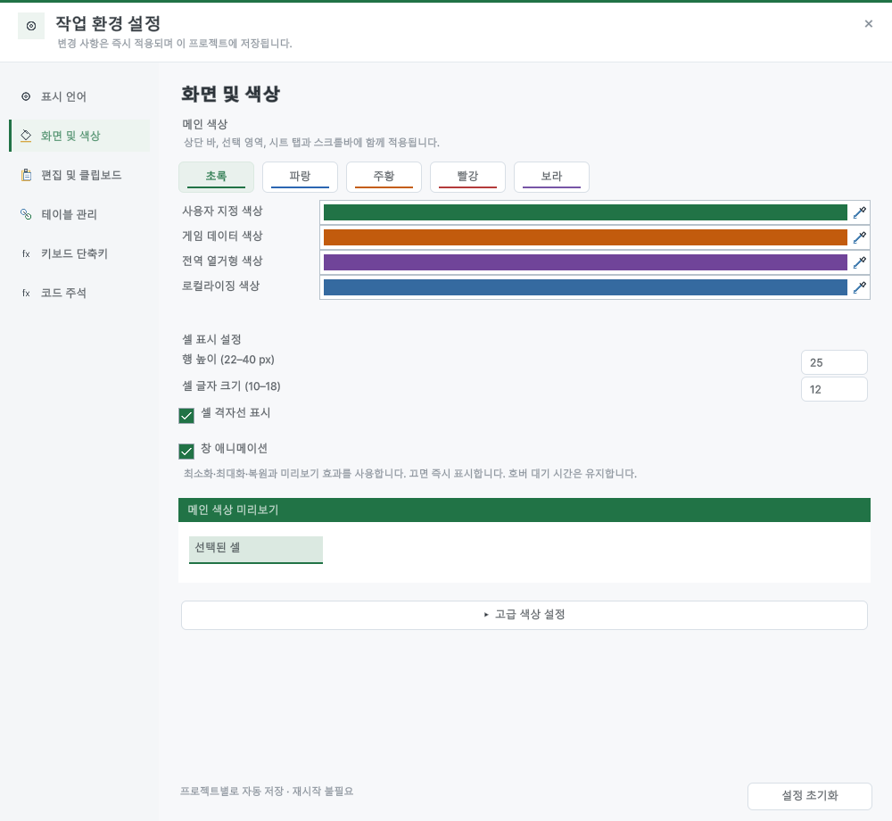

Tracefolio REPORTS & ISSUES
Tracefolio REPORTS & ISSUES문서 종류별 색상 설정
기존 기록 이전원문에 기록된 작업 내용과 당시 검증 범위를 정리한 보관 기록입니다.
문서 종류별 색상 설정
문서 종류별 색상 설정
외형 설정의 기존 사용자 지정 색상 아래에 게임 데이터·전역 열거형·로컬라이징 색상 필드를 추가했습니다. 창·선택·시트 탭·전용 도구와 원본 아이콘에 반영되며 프로젝트별 저장과 기본값 초기화를 지원합니다.

검증
50개 조건을 확인했습니다. 열린 문서와 닫힌 원본의 색상, 아이콘 픽셀, 실제 Unity 종료·재시작 뒤 값 유지, 불투명도와 초기화를 검사했습니다. 9개 언어의 설정 화면을 캡처·검토했습니다. 밝은 게임 데이터 색상에서는 탭 글자·선택 밑줄과 시트 글자의 대비를 보완했습니다.
Play 잠금 33개와 상황별 도구 208개 조건을 다시 실행했습니다. 빌드 오류·경고 0개. 영향받은 가이드 이미지 32개를 재촬영하고 9개 언어·현재 이미지 37개 및 브라우저 140개 조건을 확인했습니다. 이전 이미지·해시는 Before 폴더에 보존했습니다.
색상 적용 예

일반 스프레드시트 색상은 유지한 채 게임 데이터·전역 열거형·로컬라이징을 서로 다른 색상으로 지정해 확인했습니다.
한글 TC
| 검사 | 결과 |
|---|---|
| 기존 설정에서 게임 데이터 기본 색상 유지 | 통과 |
| 기존 설정에서 전역 열거형 기본 색상 유지 | 통과 |
| 기존 설정에서 로컬라이징 기본 색상 유지 | 통과 |
| ko — 게임 데이터 색상 번역 확인 | 통과 |
| ko — 전역 열거형 색상 번역 확인 | 통과 |
| ko — 로컬라이징 색상 번역 확인 | 통과 |
| en — 게임 데이터 색상 번역 확인 | 통과 |
| en — 전역 열거형 색상 번역 확인 | 통과 |
| en — 로컬라이징 색상 번역 확인 | 통과 |
| ja — 게임 데이터 색상 번역 확인 | 통과 |
| ja — 전역 열거형 색상 번역 확인 | 통과 |
| ja — 로컬라이징 색상 번역 확인 | 통과 |
| zh-Hans — 게임 데이터 색상 번역 확인 | 통과 |
| zh-Hans — 전역 열거형 색상 번역 확인 | 통과 |
| zh-Hans — 로컬라이징 색상 번역 확인 | 통과 |
| zh-Hant — 게임 데이터 색상 번역 확인 | 통과 |
| zh-Hant — 전역 열거형 색상 번역 확인 | 통과 |
| zh-Hant — 로컬라이징 색상 번역 확인 | 통과 |
| es — 게임 데이터 색상 번역 확인 | 통과 |
| es — 전역 열거형 색상 번역 확인 | 통과 |
| es — 로컬라이징 색상 번역 확인 | 통과 |
| fr — 게임 데이터 색상 번역 확인 | 통과 |
| fr — 전역 열거형 색상 번역 확인 | 통과 |
| fr — 로컬라이징 색상 번역 확인 | 통과 |
| de — 게임 데이터 색상 번역 확인 | 통과 |
| de — 전역 열거형 색상 번역 확인 | 통과 |
| de — 로컬라이징 색상 번역 확인 | 통과 |
| pt-BR — 게임 데이터 색상 번역 확인 | 통과 |
| pt-BR — 전역 열거형 색상 번역 확인 | 통과 |
| pt-BR — 로컬라이징 색상 번역 확인 | 통과 |
| 게임 데이터 — 열린 문서에 변경 즉시 반영 | 통과 |
| 전역 열거형 — 열린 문서에 변경 즉시 반영 | 통과 |
| 로컬라이징 — 열린 문서에 변경 즉시 반영 | 통과 |
| 일반 스프레드시트 — 열린 문서에 변경 즉시 반영 | 통과 |
| 게임 데이터 — 닫힌 원본·프로젝트 아이콘 색상 반영 | 통과 |
| 게임 데이터 — 아이콘 픽셀에 지정 색상 포함 | 통과 |
| 전역 열거형 — 닫힌 원본·프로젝트 아이콘 색상 반영 | 통과 |
| 전역 열거형 — 아이콘 픽셀에 지정 색상 포함 | 통과 |
| 로컬라이징 — 닫힌 원본·프로젝트 아이콘 색상 반영 | 통과 |
| 로컬라이징 — 아이콘 픽셀에 지정 색상 포함 | 통과 |
| 일반 스프레드시트 — 닫힌 원본·프로젝트 아이콘 색상 반영 | 통과 |
| 일반 스프레드시트 — 아이콘 픽셀에 지정 색상 포함 | 통과 |
| 프로젝트 설정 파일에 문서 색상 저장 | 통과 |
| Unity 재시작 후 게임 데이터 색상 유지 | 통과 |
| Unity 재시작 후 전역 열거형 색상 유지 | 통과 |
| Unity 재시작 후 로컬라이징 색상 유지 | 통과 |
| 문서 색상 불투명도 유지 | 통과 |
| 초기화로 게임 데이터 기본 색상 복구 | 통과 |
| 초기화로 전역 열거형 기본 색상 복구 | 통과 |
| 초기화로 로컬라이징 기본 색상 복구 | 통과 |
전체 TC · 9개 언어 화면 · 32개 재촬영 화면 · 문서 검사 · 결과


Windows Unity 6000.0.83f1의 별도 QA 프로젝트와 비표시 네이티브 HostView를 사용했습니다. 사용자 화면·키보드·클립보드를 조작하지 않았습니다. 설정 화면 외의 모든 UI·다른 플랫폼을 인증한 것은 아닙니다.
제안: 15–25분. 실제: 19.8분. 완료: 2026-10-29 17:05:57 KST. XERJ: 사용 — 후보와 현재 소스 대조.
원문과 편집 이력
- 원문 SHA-256:
16df70c9709a2d707fb798f021b471b0a3a94c58ec2752d0c66c1637bbe0c54c - 표시 날짜는 원본 파일의 수정 시각입니다. 작업 완료 시각은 원문에 있는 값을 기준으로 확인합니다.